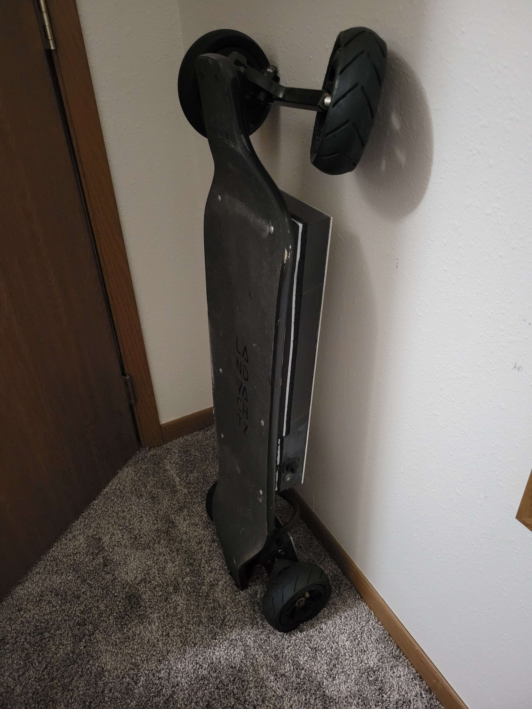
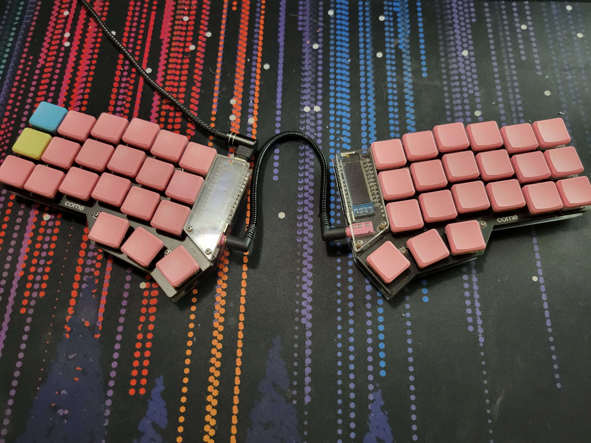
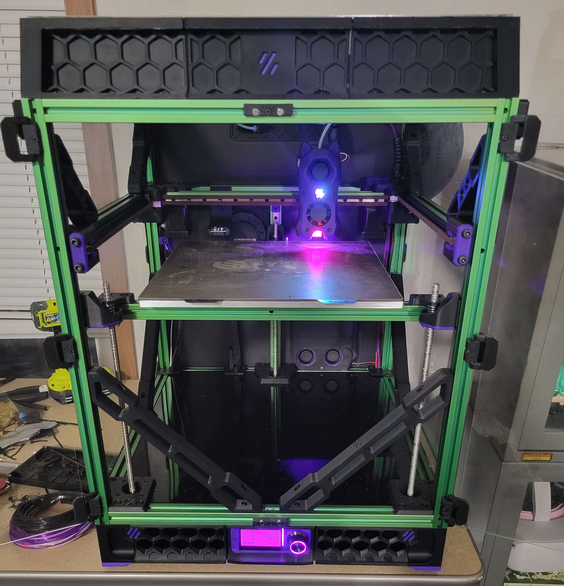

Electric Skateboard
My electric skateboard is my own unique design and it was the largest project I had ever done at the
time. I designed the electronics enclosure and motor guards and made the battery myself. Currently it is
on Mk3, but it is damaged after I was hit by a car on it. When I am well enough to ride it again I am
planning on doing a complete redesign. Currently the battery, BMS, and VESC are mounted under the board,
but I would like to mount them on top of the board so I can use smaller wheels and have more ground
clearance. The battery and BMS will likely be mounted in the center of the board and the VESC on the
back of the board.

Split Ergo Keyboard
This keyboard was not designed by me, it is a Corne keyboard or CRKBD. This keyboard was my first time
soldering many surface mount components. This keyboard is fantastic for my wrists and posture, and it is
really good for gaming too. The thumb clusters are a big advantage. I highly recommend a split ergo
keyboard for anyone who types a lot for work or school. I have also made a Dactyl-Manuform keyboard in
the past and am currently working on a TBK Mini.

Voron Trident 3D Printer
This printer was designed by VORON Design, but many of the mods and parts are of my own design or were
remixed by me and the printer was built by me. It runs Klipper firmware on a Raspberry PI 4. There is a
toolhead PCB connected to the PI via CANbus. The Z motors are running at 24 volts with TMC2209 stepper
drivers, and the A/B motors are running at 58 volts with BTT TMC5160T Plus drivers. The toolhead will
soon be replaced with a XOL toolhead, and the whole X gantry assembly will be replaced by carbon fiber
parts. My normal print speeds for functional parts art 650 mm/s and 60,000 mm/s^2. The hotend I am using
is a Phaetus Dragon UHF with a knock off CHT Volcano nozzle. I am also preparing to convert my old Ender
3 into an Ehder 3 NG.